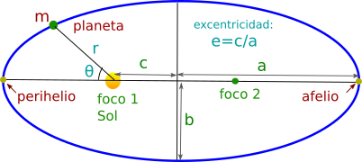
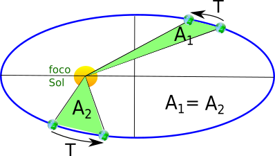

|
hi (km) ≲105 |
vi (km/s) |
βi (°) ≤ 180 |
θi (°) fijo a 0 |
| actual: | ||||
| anterior: | ||||
| h (km) | v (km/s) | β (°) | θ (°) | |
Johannes Kepler (1571-1630) fue el astrónomo alemán que estableció las leyes que describen las órbitas elípticas de la Tierra y otros planetas alrededor del Sol. Esto lo pudo conseguir gracias a los miles de datos astronómicos recopilados por el astrónomo danés Tycho Brahe (1546-1601).
Aunque resultó muy satisfactorio encontrar tales leyes, Kepler nunca consiguió comprender el sentido último de las mismas. Posteriormente, con el desarrollo de la teoría de Newton de la Mecánica y la Ley de la Gravitación Universal, las leyes de Kepler se pudieron interpretar como un resultado natural de la interacción entre el Sol y cada planeta.
Todos los planetas se desplazan alrededor del Sol describiendo órbitas elípticas. El Sol se encuentra en uno de los focos de la elipse.
En la figura adjunta se muestran los elementos básicos de una elipse: los focos (dos), el centro y los semiejes a,b. La posición de los focos respecto del centro determina la desviación respecto a un círculo, esto es, la excentricidad e. Así, cuando los dos focos se confunden con el centro estamos en un círculo. La órbita de la Tierra en particular tiene solo una pequeña excentricidad de 0.017.
El radio vector que une un planeta y el Sol recorre áreas iguales en tiempos iguales.
Esta ley nos dice que la velocidad de giro alrededor del Sol no es uniforme sino que cuando el planeta está más alejado del Sol su velocidad es menor que cuando está más cercano al Sol.
La ley de las áreas es deducible directamente de la constancia del momento angular.
El afelio y el perihelio son los dos únicos puntos de la órbita en los que el radio vector y la velocidad son perpendiculares. Por ello solo en esos 2 puntos el módulo del momento angular, L, se puede calcular directamente como el producto de la masa del planeta por su velocidad y su distancia al centro del Sol.
L= m ⋅ r ⋅ v ⋅ sen 90º
Para cualquier planeta, el cuadrado de su período orbital, T, es directamente proporcional al cubo de la longitud del semieje mayor, a, de su órbita elíptica, es decir:
T2 = const a3
En estas ePrácticas trataremos el manejo experimental (virtual) y numérico de la primera y segunda ley.
El módulo de experimentación consta de tres paneles.
El primero, superior izquierdo, es el panel de mandos donde el usuario especifica los parámetros iniciales que determinarán una órbita, que podrá ser abierta o cerrada.
El panel inferior izquierdo, listado de coordenadas, que mostrará las sucesivas posiciones del satélite a lo largo de la órbita, en particular la coordenada radial, celeridad (módulo de la velocidad) y posición angular a través del ángulo polar θ. Dicha tabla habrá de ser consultada para responder a las preguntas que serán formuladas en el apartado siguiente.
En el panel derecho se sitúa un lienzo sobre el que se dibujarán las formas de las órbitas. Son las órbitas que realizaría un satélite alrededor de un planeta, que no necesariamente será la Tierra.
| |
hi (km) ≲105 |
vi (km/s) |
βi (°) ≤ 180 |
θi (°) fijo a 0 |
| actual: | ||||
| anterior: | ||||
| h (km) | v (km/s) | β (°) | θ (°) | |
Los parámetros básicos cinéticos de la órbita los fija el usuario. Estos son:
En cuanto a la posición, dado que el planeta lo admitimos esférico, no importaría desde qué posición angular lanzamos el satélite. Es por eso que todas las órbitas empiezan en la misma posición angular (ángulo polar θ, ver diagrama del módulo de experimentación) que tomamos como cero. La coordenada radial inicial es fijable. Sin embargo es relativa a la superficie del planeta y tiene un límite aproximado de 100000 km. Hay por tanto que distinguir entre la distancia del satélite al centro del planeta, r, de la distancia desde la superficie, h. La relación entre ambas es obviamente:
r= R + h (1)
siendo R el radio del planeta (desconocido).
La velocidad, como vector que es, debe especificarse con un módulo y una dirección. Haciendo referencia al diagrama del módulo de experimentación, el ángulo (externo) que forman el radio vector y el vector velocidad, denotado por β, determina por completo la dirección de este último vector.
Forma parte de la experimentación analizar cómo actúa un determinado parámetro sobre la forma de la órbita. Para facilitar lo cual, la aplicación muestra los dos últimos conjuntos de parámetros iniciales, así como la forma de las dos últimas órbitas. Lo natural en este sentido sería variar sólo uno de los tres parámetros manteniendo constante los otros dos, y observar el efecto de ese cambio.
Las órbitas resultantes de la parametrización inicial que el usuario ha establecido, se ejecutan pulsando el botón Lanzar cohete, y se muestran de dos maneras. Cuantitativamente en la tabla numérica, la cual es editable: quiere decir que se pueden copiar los datos para transportarlos a otro entorno, como una hoja de cálculo. Y cualitativamente en el "lienzo". La órbita en azul es la correspondiente a los parámetros iniciales actuales, que también se escriben en azul, tal como se reflejan en el panel de mandos. Órbita gris, la anterior a la órbita actual, que corresponde a los parámetros iniciales en gris en el panel de mandos
Respecto a las aproximaciones adoptadas, la más importante es que se desprecia cualquier tipo de rozamiento durante el transcurso de las órbitas. Se podría pensar que se trata de un planeta sin atmósfera.
ir a módulo de experimentaciónEl primer objetivo, de carácter genérico, será desarrollar un conocimiento "experimental" de las leyes planetarias. Más precisamente, se irá avanzando en este conocimiento por pasos, al ir trabajando las sucesivas tareas que se proponen.
Generar órbitas circulares a distintas distancias del planeta. Eso exige en primer lugar que el ángulo β entre radio y velocidad sea de 90º. Luego, colocar inicialmente el satélite a una distancia y velocidad, a discreción, del planeta e ir ajustando por tanteo la velocidad, de menos a más, hasta que la órbita se pueda considerar circular, sin modificar la posición inicial. Para ese objetivo lo mejor es, no una apreciación visual, sino consultar el listado numérico de la órbita, verificando que las variaciones máximas de la celeridad del satélite son despreciablemente pequeñas, por ejemplo, menores de 5%.
Repetir el proceso anterior para distintas coordenadas radiales iniciales, al menos cinco veces, que barran todas las distancias al planeta, desde su radio, h → 0, hasta unos 100000 km. De este modo se obtendrá una serie de duplas: (h1,v1), (h2,v2), (h3,v3),...
Graficar 1 ⁄(vi)2 frente a hi. Se deberá observar que esos 10 puntos (o los que se hayan generado en el apartado anterior) siguen una relación lineal, que escribimos como
1 ⁄v2 = aexp·h + bexp.
Gráfica o analíticamente, hacer una regresión lineal que nos permita determinar "experimentalmente" tanto la pendiente aexp como el término independiente bexp.
Como no puede ser casualidad esta relación lineal, habrá que escribirse las ecuaciones que gobiernan el movimiento planetario circular, comprobando esa interrelación. Cuidado con confundir la distancia real al centro del planeta con la distancia h a su superficie; revisar la ecuación (1). Se debe comprobar que en efecto se obtiene una relación lineal que podemos escribir como:
1/v2 = ateo·h + bteo
donde ateo y bteo serán función del radio y masa, R y M, del planeta.
Finalmente, bastará identificar ateo = aexp y bteo = bexp para poder determinar el radio y masa del planeta: R y M .
ir a módulo de experimentaciónUna vez conocidos los dos parámetros "intrínsecos", Rplaneta y Mplaneta, se pide verificar que a lo largo de cualquier órbita, tanto la energía del satélite como su momento angular se mantienen constantes.
Generar cualquier órbita, sea una de las anteriores o no, circular o no, cerrada o no, con el panel de mandos del módulo de experimentación. Sobre la tabla numérica que recoge las magnitudes cinéticas del movimiento, seleccionamos al azar algunos puntos, y sobre ellos calculamos la energía específica Ee y el momento angular específico Le. Estas magnitudes no son sino las correspondientes a la unidad de masa del satélite. Es decir:
Ee = ½ v2− (G ⁄ r) Mplaneta
Le = r v sen β (2)
Hay puntos de una órbita elíptica en que radio vector y velocidad son perpendiculares. Eso ocurre en particular en los extremos de los ejes. Si nos concretamos por ejemplo al eje mayor, tendremos el punto más alejado, apoapsis (apogeo cuando se trata de una órbita alrededor de la Tierra) y periapsis el más próximo (perigeo para la Tierra como centro). Pues bien, en estos dos puntos la conservación del momento angular (por ser β=90º) exigirá que:
vapo · rapo = vperi · rperi (3)
Verificar "experimentalmente" que la ecuación (3) se cumple. Previamente habrá que identificar en el listado numérico cuáles son el apoapsis y el perapsis de la órbita, para lo cual bastará identificar los extremos de la interdistancia r.
Observar que, en breve, lo que dice (3) es que el objeto que describe la órbita bajo el solo efecto de las fuerzas gravitatorias lo hace más rápido cuanto más cerca está del centro de fuerzas. Eso es lo que afirma en particular la segunda ley de Kepler, como hemos recordado en la Introducción.
ir a módulo de experimentaciónUna de las variantes de los lanzamientos posibles es el lanzamiento vertical, para lo cual basta con colocar el satélite sobre la superficie y "apuntar" hacia arriba la velocidad.
Fijar velocidades iniciales vi sucesivamente mayores e ir registrando la altura alcanzada, digamos, H. Esta se obtiene consultando el listado numérico de la trayectoria.
El rango de velocidades iniciales vi se determinará por tanteo de forma que H barra todas las distancias accesibles que son, como se ha dicho, aproximadamente 100000 km. Por las razones que se aducen a continuación las medidas se harán más detalladas en la zona de bajas velocidades (al principio) y a altas; manera de hacerlo: cuando ya haya aparecido el mensaje de "Órbita fuera de rango" retroceder en valores de vi e ir más poco a poco. Se tomarán al menos 15 medidas de este modo, obteniendo así una serie de duplas:
(vi1,H1), (vi2,H2), (vi3,H3),...
La explotación de esos datos pasa por graficar vi frente a Hi. Se debe ver una curva no lineal en que la velocidad tiende asintóticamente a un valor. Es buen momento para completar alguna medida si se ve conveniente. Una vez dibujada la curva, lo natural es preguntarse qué se debe esperar teóricamente para dicha dependencia.
Deducir una ecuación que ligue la velocidad inicial vi frente a la altura alcanzada H. Pista: el campo gravitatorio es conservativo. ¿Es la relación lineal? Se podrá identificar la velocidad de escape ve como la correspondiente a H arbitrariamente grande, es decir H → ∞. ¿Hasta qué punto el valor máximo alcanzado de v "experimentalmente" en la gráfica anterior se acerca al valor teórico ve?
Otra zona de interés de la curva vi=vi(H) es la de alcances H cortos. ¿Es posible obtener una dependencia vi=vi(H) para H ≪ R a partir de las ecuaciones anteriores teóricas? ¿Cómo compara entonces con la pendiente "experimental" en esa región? ¿Qué se puede obtener de esa identificación?
ir a módulo de experimentación1) Con el módulo de experimentación, situar el cohete a una altura de 10000 km sobre el planeta. Manteniendo βi a 90°, ir variando la velocidad inicial hasta encontrar la mínima velocidad, sea vm, a partir de la cual el cohete ya no choca contra el planeta.
Ahora se consultará la tabla para hallar el punto de máximo acercamiento al planeta anotando su velocidad, digamos vp. A partir de las ecuaciones anteriores teóricas, encontrar una justificación analítica para ese valor concreto de vp.
2) Situar el cohete de nuevo a una altura de 10000 km. Por tanteo encontrar una velocidad suficientemente baja como para que los lanzamientos a distintos ángulo iniciales βi conduzcan a una colisión con la superficie del planeta. Para cada ángulo para el que se produce colisión se anotará, de la tabla, la velocidad en el momento de la colisión, que podemos llamar vc.
Se observará que el valor de la velocidad en el momento de la colisión es muy coincidente. ¿Hay alguna explicación para esto? ¿Se podría reencontrar ese valor de vc teóricamente?